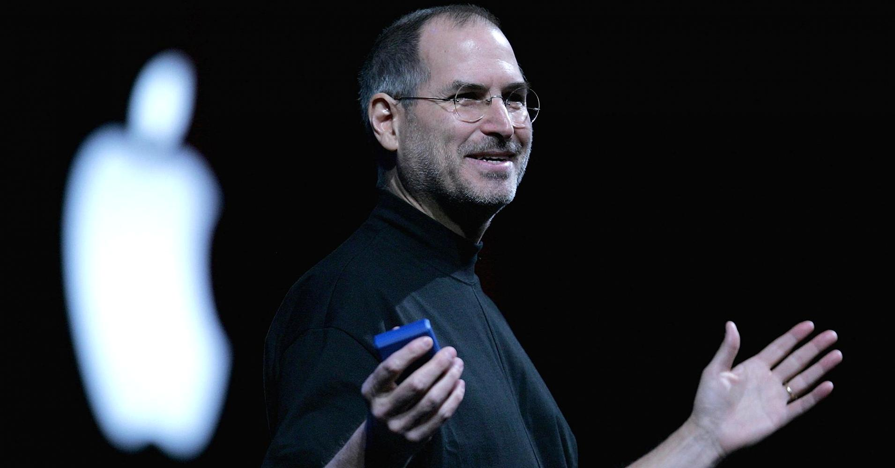

Become so Rich: I really aspire to become so rich, that I can do whatever I want to make me and the people around me
so happy that, for a moment, we would stop worrying about life's burdens. I believe that money will act as a fuel
to run my dreams. I think everybody has an ambition to become wealthy, but not everyone admits it, maybe because
society teaches us to live simple; thus, shrinking our ambitions.
Travel the World: Seeing the beauty of this somehow wonderful world is a great goal, and a sure plan. They say that
the more you see the world, then will you be able to gain more knowledge and be able to learn more; about life, and
things that matter most.
Find a Great Job: To be able to work for a job that can make me a better person in my own field is one
of my goals that I have been thinking alot lately about. It will be a great pleasure watching myself work with
a company that has great visions for the future and for the world.

Start a Company: Starting a company is a really big thing for me. It means that I am capable of such great things.
I often imagine myself organizing one, leading one and all that stuff. It is a really big challenge for me that
it pushes me to my true potentials.
Create Something Significant: It has always been a dream to create something that will make a mark in history.
It will be a great pleasure being a part of the collection of people that an impact and made something
significant in this world. As they say, the ultimate goal of a great man is not to physically live forever,
but for his name and works to be remembered throughout history; thus, figuratively making a man immortal.
Inspire People: After acquiring all my wants and needs, my plan is to give back to people. I don't plan on
giving back material things but I plan on giving inspiration because material things can be lost, but inspiration
remains whenever we need it. As someone said, the most important thing is to try and inspire people so that they can be great in
whatever they want to do.
Publishing Books: Writing is one of may passions, and sharing it to the world is like sharing a part of myself.
This has become on of my plans and goals because it helps me show the world my visions and perceptions in life.
I will do this hoping that others might learn something from me and my life.